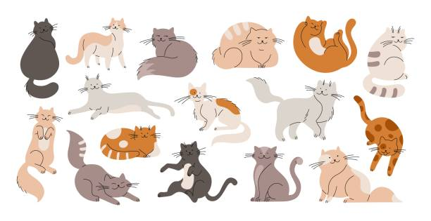
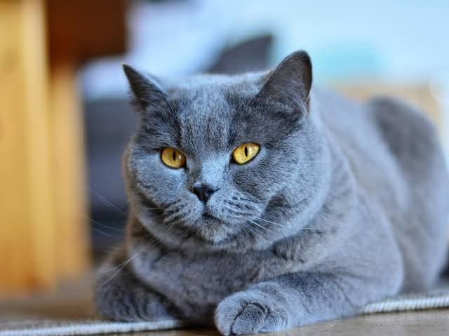
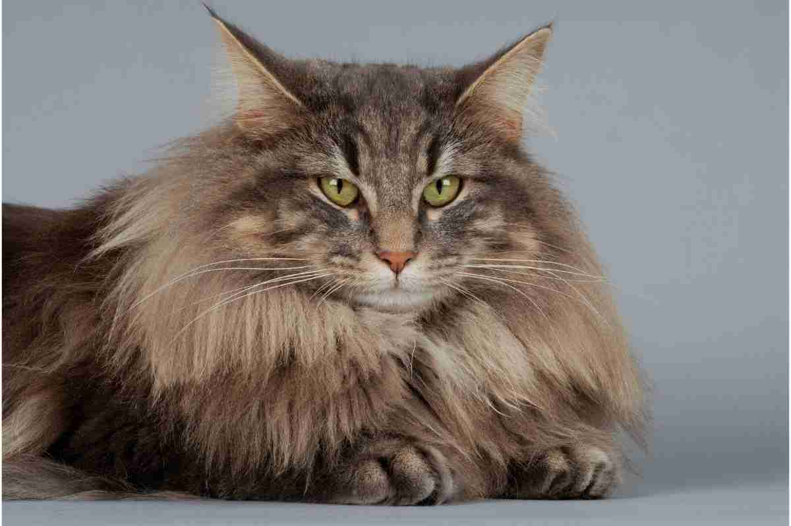
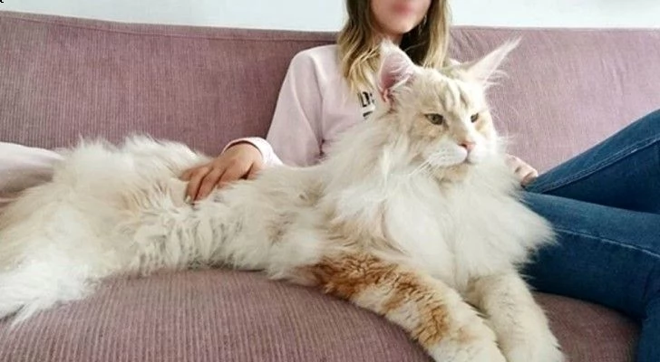
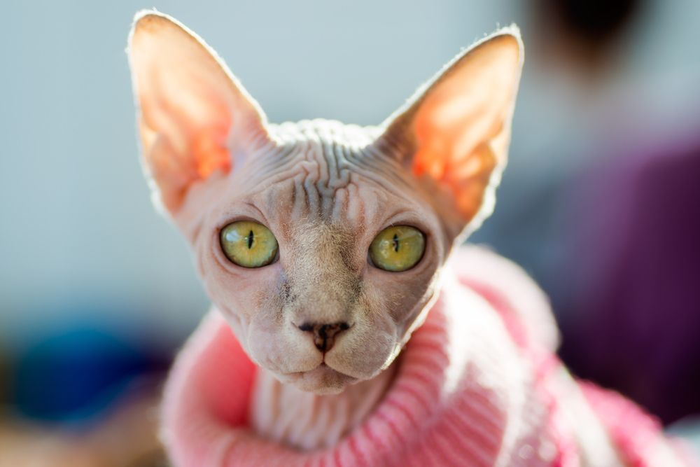

Le razze di gatto più diffuse in Italia
Scopri le razze feline più diffuse e amate: a pelo corto, lungo e senza pelo, con curiosità e caratteristiche.

Esistono numerose varietà di gatti, ciascuna con tratti distintivi: se vuoi accogliere un felino in famiglia, un primo passo è selezionare tra le moltissime razze disponibili, classificandole ad esempio in base alla lunghezza del mantello. Di seguito, alcune delle più apprezzate tra quelle a pelo corto, a pelo lungo o prive di pelo.
Se stai considerando di adottare un gatto dai un'occhiata qui!
Razze di gatti a pelo corto:
Siamese

Affettuoso e in genere amante del contatto con l’uomo. Molto intelligente e giocherellone, è soprannominato gatto parlante per via dei frequenti e particolari miagolii che emette per richiamare l'attenzione dei suoi umani e ricevere da loro coccole e attenzioni. Inconfondibile la tipica colorazione, definita “point”, e gli occhi azzurri.
Certosino

Tra i gatti più amati c'è lui, il Certosino: arriva a noi da lontano, poiché è una delle razze più antiche (è conosciuto fin dal 500) e la sua origine potrebbe risalire addirittura alle crociate. La sua caratteristica è il mantello folto uniformemente grigio. La corporatura è robusta e il carattere equilibrato. Vive bene in famiglia sia con i bambini che con altri animali, tende ad affezionarsi molto al suo proprietario, col quale adora giocare.
Razze di gatti a pelo lungo:
Norvegese

Maestoso e bellissimo, le sue origini vanno ricercate tra le leggende dei Vichinghi. Famoso per essere un abile cacciatore, ama la vita all'aperto ma non disdegna la compagnia dell'uomo, con il quale sa essere molto affettuoso e socievole. Calma, indipendenza ed empatia lo caratterizzano, ama la vita casalinga purché abbia sempre la possibilità di esplorare, giocare, arrampicarsi e saltare.
Maine Coon

Vanta la nomea di gigante buono, in quanto è tra le razze di gatti di taglia più grande e ha un'indole docile e tranquilla, dal carattere affettuoso e socievole. Il Maine Coon ama la famiglia e adora stare in compagnia dei propri umani, anche quando si tratta di bambini, con i quali si diverte a giocare e verso i quali è molto protettivo. A differenza della maggior parte dei felini domestici, ama l'acqua.
Razze di gatti senza pelo:
Sphynx

Il gatto Sphynx, noto per l'assenza di pelo, è una razza affascinante e unica. La sua pelle nuda, rugosa e calda al tatto, ricorda il velluto, mentre le grandi orecchie e gli occhi a mandorla gli conferiscono un'aria esotica. Nonostante l'apparenza "extraterrestre", lo Sphynx è un felino estremamente affettuoso, socievole e vivace, che ama il contatto fisico e cerca costantemente l'attenzione dei proprietari. Originatosi in Canada negli anni '60, richiede cure specifiche: va protetto dal sole e dal freddo, e necessita di regolari bagni per rimuovere l'eccesso di sebo cutaneo. Ideale per chi cerca un compagno dinamico e amante delle coccole.
Torna su